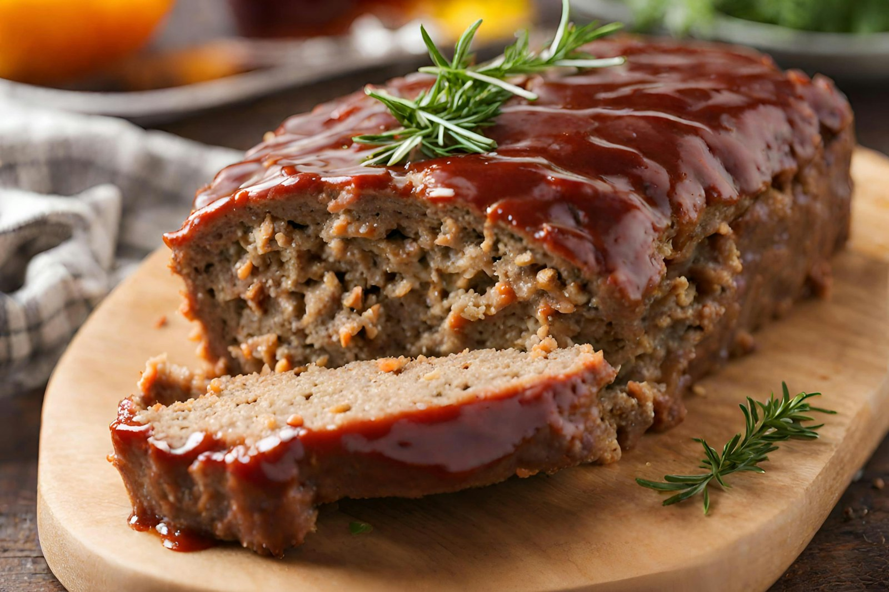
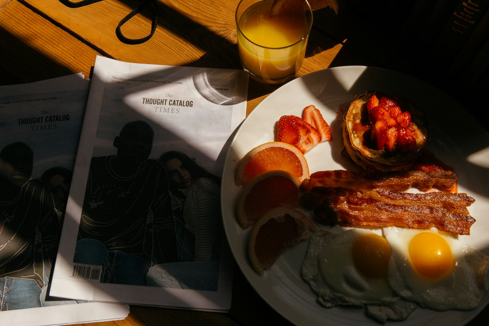

01
01
Biscuits & Gravy
Buttermilk biscuits split and smothered in sausage gravy. Add an egg, add two.
$6.50Doors open at 5:00 am · Mon–Fri, Sat until 11:30
Pineville, NC · Family owned since the ’70s
The Kopper Kettle has been filling plates on Nations Ford Road since the 1970s — country ham, livermush, eggs any way you like them, and a pot of coffee that never quite empties.

Order these
The plates that have kept regulars coming back for decades — and that new folks are told to try first.
01
Buttermilk biscuits split and smothered in sausage gravy. Add an egg, add two.
$6.50
02The lunch regulars plan their week around. Mashed potatoes, vegetable, roll.
$11.50 03
03
Tall, tender and griddled to order. Cinnamon pecan drop biscuits if you're feeling it.
$7.50 04
04
Two eggs, bacon, sausage, grits or hashbrowns, and a biscuit. You won't need lunch.
$12.50
Same counter, same coffee, five decades of mornings.
Our story
George and Penny Karnezis opened the Kopper Kettle in the 1970s, a Greek family cooking Southern food the way their neighbors made it. Their daughter Sara has run the place since 2014, and much of the crew has been here longer than some of the regulars have been alive.
A kitchen fire shut the doors in October 2024. Charlotte waited almost two years, and in 2026 the kettle came back on — same recipes, same booths, same pot of coffee.
Read the whole storyWhat regulars say
Quoted from Yelp, Tripadvisor and Facebook reviews.
“When I travel I try hard to eat at places that are off the beaten path and very much not chain places. This checks both those boxes. Fancy it is not, but home style it is. Cooked fresh and hot and served by friendly folks who kept my tea glass full.”
“Friendly service, food made fresh and served quick… Food was outstanding, you won't leave hungry and for a great price too!”
“This diner has a friendly hometown feel. The food was well seasoned. I had the most delicious fries I've ever tasted.”
“I can remember my grandmother taking me here when I was just a child, over 30 years ago. Basic home cooked country breakfast.”
“'70s-themed diner with hearty breakfast… biscuits and cinnamon pecan drop biscuits.”




11000 Nations Ford Rd, Pineville — Mon–Fri 5am, Saturday 5am–11:30am, closed Sunday.